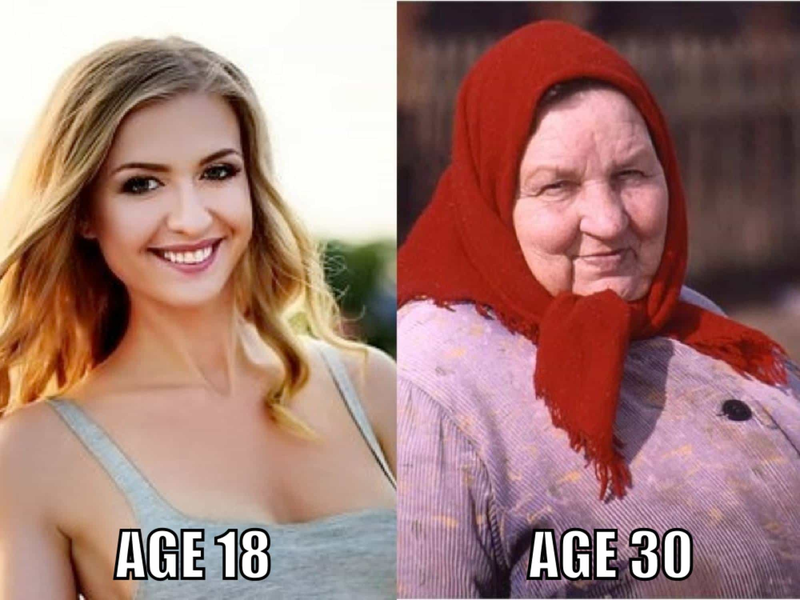

Mike travels the world, seeks to know the unknown, has a strong desire to expand his mind, and can be reached at [email protected]


Эта статья была написана на английском языке Майком Метцером (Mike Metzer).
Мне все еще доводится слышать, что украинки – лучшие из лучших по красоте, женственности, семейной ментальности и традиционному воспитанию, ну или о том, что улицы Украины переполнены супермоделями, единственное желание которых – завести семью в 20 лет со старым некрасивым жирдяем, который просто к ним хорошо относится и хороший человек.
Разумеется, в стране с населением более 40 млн. чел будут встречаться девушки, обладающие вышеуказанными качествами, но в большинстве своем украинки весьма переоценены по разным причинам. Это может привести мужчин к значительному разочарованию, когда они познакомятся с Украиной ближе и получат облом от реальности. Почему они переоценены? Приступим.
Безусловно, фото внизу – преувеличение, однако даже самые красивые украинские девушки – весьма «скоропортящийся» тип. Пик их красоты – примерно 23 года от роду. 24-26-летние девушки могут быть все еще привлекательными, но с этого момента начинается закат. Например, даже некоторые 30-летние украинки могут хорошо выглядеть просто будучи еще в форме, с длинными волосами и в уместной одежде, но все равно существует отчетливое различие между горячей 23-леткой и еще более горячей 30-леткой.

Многие украинки стройные с очень небольшими прелестями или вообще фигурами без изюминок. Очень редко, когда можно встретить девушки с хорошими сиськами и попкой. Время от времени я сталкиваюсь с девушками, у которых обалденные попки, но я не всегда уверен, что это не импланты, потому что у таких девушек и губы, и сиськи накачаны. Лично я хоть и люблю стройный тип девушек, но он со временем мне поднадоел, что вынуждает меня искать более пышных девиц в соседних странах.
Большую часть времени их зубы переливаются оттенками от серого до желтого, а иногда можно встретить заметные дырки в зубах или пятна. Лучшие зубы я встречал у успешного ортодонта, но даже ее зубы не были полноценно белыми.
Нехорошая кожа у них может быть в разных ипостасях – от прыщей до разных шрамов. К их чести, они обычно тщательно их маскируют под макияжем, но в том году я встречал немало девчонок без макияжа, что было удивительно, если сравнить с годом ранее.
У некоторых девушек могут встречаться всякие шрамы, происхождение которых невозможно установить, если вы вздумали поиграть в игру «угадай, что случилось». Резнули ножом? Укусило животное со страшной пастью? Упала с крыши, продравшись сквозь ветки, чтобы в итоге приземлиться на гору камней? Я всегда ошибался со своими догадками. Обычно это были рубцы от несчастного случая или неаккуратной хирургии.
Примечание: постарайтесь не попадать к врачам в Украине. Серьезно.

Лично мне это все равно, но если тебя волнует, что думают вокруг о тебе и твоей девушке, и ты планируешь забрать ее из Украины в западную страну (об этом – далее), имей в виду, что многие из них имеют вид невесты из брачного агенства. Что-то из этого можно исправить, изменив гардероб для соответствия новым условиям, но они наверняка сохранят это холодное советское выражение лица, которым склонны обладать многие украинки.
Некоторые украинки, на самом деле, могут быть веселыми, теплыми и интересными, однако обычно лишь со временем они раскрывают весь свой характер. По большей части, они тихие, мало вовлечены в беседы, не способны понять многие шутки или даже простых дразнилок, что вынуждает тратить много времени на изучение их, когда встречаешься с ними.
Если у тебя веселая и игривая натура, которая может принести результат на Западе, то тебе не понравится общение с украинками. Некоторым мужикам пофиг и они предпочтут таких, некоторым общение покажется нудным и незахватывающим, а некоторые могут сильно расстроиться из-за неотклика бОльшую часть времени.
Я встречался с разными деловыми женщинами в Украине – от врачей до юристов и бизнесвумен. Когда я только приехал в страну, я думал, что женщины с карьерой все равно сохраняют свою женственность просто потому, что это – Украина. Нет.
Они продемонстрировали минимум женственности в своем поведении в отличие от женщин, которые либо вообще не работают, либо работают на более простых работах вроде кассиров или операторов колл-центра. Они в этом плане не так плохи, как женщины на Западе, но мне интересно, как скоро ситуация ухудшится.
Женщины не созданы для карьеризма по своей природе. Неудивительно, что даже в Украине они начинают терять свою женскую составляющую, выбрав этот путь. Даже у тех, кто носит одежду, подчеркивающую женственность, и у кого длинные волосы, манеры были заметно менее женственными по сравнению с женщинами-некарьеристами.
Поражало то, что ненормальное число девушек носило обувь без каблуков в центре столицы даже в теплые солнечные дни на выходных. Я спрашивал некоторых из них, зачем они носят плоскую обувь вместо каблуков, и все они отвечали примерно одинаково – «так удобнее». Это всё были одинокие девушки, которые хотели парня в своей жизни, однако они больше переживали о комфорте. Я даже видел девушек на Крещатике в шлёпках, но слава Богу, это было редкое зрелище.
Помимо отсутствия каблуков, избытка коротких сексуальных платьев тоже не было. И много раз, когда видел девушек в привлекательном женском платье, она сочетала его с неприглядной обувью на плоской подошве. Я полагаю, что эта тенденция сохранится, но надеюсь, что она не ухудшится быстро.
Подозреваемые в строю: Tinder, Instagram, Facebook и т. д. Многие используют даже Whatsapp и Viber лишь для набора подписчиков и последователей, вместо того, чтобы просто ходить на свидания. Нет нужды углубляться в это, когда отрицательное воздействие на них из-за растущего увлечения всем этим очевидно.
Мода на татуировки была на подъеме год назад. Молодые девушки охотно их делали, начиная от крошечных татуировок на пальцах до огромных развернутых тату на торсе. Чаще всего эти тату не были даже креативными. Казалось, что девушки просто копируют чушь, которую видели на «моделях» из Инстаграма. Они говорят, что тату – это круто, и многие их друзья себе делают. Нехороший знак.

Не поймите меня неправильно: Украина все еще в своей массе не приемлет гомосексуальность. Это не так, чтобы там полуголые геи танцевали на улицах в платьях размахивая надувными фаллосами, однако принимая во внимание некоторые недавние события вроде провозглашения Арки дружбы народов «Аркой многообразия» (“Arch of diversity” – прим. перев.) и раскраски ее в цвета радуги вкупе с гей-парадами типа парада в этом году (2017 г.– прим. перев.), тренд ясен.
Иногда на своих свиданиях я видел геев на свиданиях. Парни всегда были в свободном телесном контакте и, вроде, не сильно заморачивались над тем, как они выглядят на публике. Девушки рядом со мной говорили, что счастливы за них, и что каждый должен жить в гармонии. Если я говорил, что мне это не нравится, девушки расстраивались и пытались растолковать мне, насколько я должен быть открытым и принимать такую красивую вещь, как влюбленные геи. Несколько раз они меня оскорбляли, обзывая гомофобом и говоря, что со мной что-то не так. Это вот прямо такие традиционные нормы воспитания.
Украинские девицы проверяют тебя на вшивость постоянно, чтобы увидеть, крепкий ли ты мужик или простофиля, которым они могут управлять. Среди всех женщин во всех странах, которых я встречал, украинки были худшими (и россиянки не отстают).
Обычно, я не против проверок, так как проходить их прикольно при правильном подходе, но иногда такие девушки могут реально доставать. Один украинец мне однажды сказал: «Украинкам подчас нужна хорошая пощечина, чтобы они не выходили за рамки». Поскольку я не преемлю рукоприкладство к девушкам, этот пример показывает, что даже украинские парни, которые привыкли быть сильными рядом с девушками, до сих считают, что со многими из них нужны крайние меры.
Другой местный сказал, что украинки подобны пружине. «Пока ты их держишь сжатыми – все в порядке. Если ослабишь сжатие, пружина произвольно выскакивает и причиняет много вреда».
Всё – сделки в их голове. Даже самые милые девушки могут резко измениться, если появляется возможность получить финансовую выгоду. С этим можно управиться, если у тебя четкая система, если ты не устраиваешь дешевых свиданий, не тратишь на них много и не действуешь как кормилец или спонсор, однако это приедается и довольно скоро начинает раздражать.
В своей предыдущей статье я перечислил несколько конкретных афер, которых надо остерегаться, но такая расчетливая манера поведения превосходит отдельные обманные трюки. Это способ мышления, который есть у них всех в разных масштабах и в итоге поднимет свою уродливую голову.
Даже милые девушки, которым ты вправду нравишься, видят в тебе стереотипного богатого иностранца. Если ты такого склада характера, что хотел бы женщину, которая любила бы тебя как ты есть и не парилась вообще о деньгах, Украина – не то место. Это справедливо для всех возрастных категорий.
Я сейчас не говорю о том, что они все золотоискатели. В Украине есть девушки, которые хотят любви. Но ты – иностранец. Она может влюбиться в тебя за то, кто ты есть внутри, но улучшение ее финансового положения в виде побега из «ада под названием “Украина”» всегда будет у нее в голове, когда она смотрит на тебя. Некоторые мужчины могут использовать эту вещь как часть своей стратегии соблазнения, чтобы распологать финансовым преимуществом, но гораздо лучше этого не показывать и вести себя просто, чем по-богатому.
Расстроен? Раздражен? И то, и то!
Одно свидание. Второе. Третье. Четвертое… стоп, что? Разве в книге «Bang Ukraine» не сказано, что девушки понимают, что третье свидание означает секс? Да, девушки совершенно точно знают, что начиная с третьего свидания идет секс, но это не означает, что он непременно состоится просто потому, что она идет на третье и четвертое свидание.
В реальности, знание о том, что эти свидания означают секс, позволяет ей даже лучше подготовиться к тому, чтобы НЕ иметь секс раньше времени, успешно борясь со сценарием «так просто случилось», который ты подготовил (или мог подготовить) для свидания.
Они могут быть довольно изобретательными в том, чтобы избегать секса, чтобы попробовать получить с тебя больше. Иногда они даже говорят нечто вроде «Я не готова в этот раз, но в следующей раз секс будет», когда знают, что подвели тебя к пределу своих возможностей кучей свиданий и отказами в последний момент. Как только они это говорят и уходят, «следующий раз» вряд ли будет.
Некоторые приемы были настолько общими, что будто всё смахивало на то, что есть книга «Don’t Bang Ukraine», которую написала украинка как инструкцию, чтобы максимизировать поток ресурсов от иностранцев и давать им в результате каплю или вообще ничего.
Эта малая окупаемость инвестиций вполне реальна. Некоторые из вас, кто не знаком с этими девушками, мог бы сказать: «Они девушки с традиционным воспитанием, а значит, ждать секса дольше должно быть в норме», но, как я говорил, проблема в том, что нет гарантии, что они переспят с вами, если вы продолжите с ними встречаться дальше и тратить свое время и деньги. Даже алкоголь не является надежной гарантией. Многие украинки будто владеют нечеловечески сильным контролем своей головы и вагины даже когда естественно сильно возбуждены.

Оные обычно предпочитают «дорогого» украинца или «спонсора», а лучше – и того, и другого одновременно. Такие девушки не дуры. Они знают себе цену. Теоретически, вполне возможно переспать с 9-балльной или 10-балльной (по 10-балльной шкале) девушкой, но если ты думаешь ехать в Украину, чтобы прокрутить свою идею и баловаться с 10-балльными, подумай хорошенько.
Когда я впервые приехал в Киев, я переспал с 9-балльной на втором свидании. А до этого, во Львове, я переспал с другой 9-балльной менее, чем за два часа с момента встречи. В то время, когда стратегия и ресурсы были устойчивыми, я думал, что смогу повторять такое бесконечно. Я думал, что Украина – раздолье и тут всегда будет так просто. Оглядываясь назад, вспоминаю, что они обе были сочетанием способа соблазнения, времени и удачи.
После того, как я провел в Украине больше времени, я понял, что сойтись с 9-ками и 10-ками трудно до истощения, особенно с теми, кто не был мажоркой. Даже 9-ти и 10-балльные мажорки могут быть трудны, потому что они много тусуются с иностранцами, которые усугубляют ситуацию, осыпая их подарками и вниманием. Я не говорю, что этого нельзя сделать, но такое может быть немного утомительным. С восьмибалльными также становится все более сложно, что требует больше усилий и большего терпения к булшиту, чтобы переспать с ними.

Для начала, немного жестоких приятностей: Бог в помощь, если ты туп настолько, что хочешь жениться на одной из них и забрать их в западную страну вроде США. Эти женщины тебя уничтожат. Мне безразлично, насколько серьезны твои намерения. Ты ненормальный. Если бы ты был нормальным, ты не тусовался бы на сайтах вроде этого. Ты бы не пытался ввязаться в это дело. Украинки естественные от природы. И у них много-много лет практики, которая довела их игру до уровня большего, чем просто естественный.
Если ты заберешь ее из Украины, она сокрушит тебя. Это может случиться не в первый месяц, не в первый год или даже пару лет, но часики начнут тикать со дня, когда ты ее завезешь в западный мир. Украинки, живущие в США, которых я знаю, вообще хвастаются тем, как они полностью довели человека, который вывез ее из жопы и дал ей новую жизнь.
Они не просто гордились тем, что взяли от него всё и оставили от него блеклую тень прежнего его, а и рассказывали это c проблеском удовольствия. Ты можешь возразить, что все женщины таковы, но вот эти могут перенести это на другой уровень. И чтобы подавить их моду заговаривать зубы иностранцам словами, что они любят Украину, просто не верь им. Они всего лишь пытаются показать, что они не такие, как другие здесь. Поверьте, они все хотят свалить из Украины, особенно в США. Если ты найдешь достойную женитьбы украинку и уверен, что справишься с ней, лучшим вариантом будет жить в Украине и, желательно, в том же городе, где и ее родители.
Одна из основных причин, почему украинки переоценены, – это потому что они из Украины. Украина не такая замечательная страна. Бардак, лишения, коррупция и обман были составляющей страны в течение очень долгого времени. Я не буду вдаваться в политические или психологические рассуждения, почему так, однако это все означает не лучшее психологическое состояние девушек в перспективе.
Эта статья написана не для того, чтобы обосрать страну и ее девушек, а, скорее, для прояснения мифов и заблуждений вокруг них, чтобы лучше подготовить мужчин к тому, с чем они могут столкнуться, поехав туда. Хоть Украина явно не райское место для траха, и у девушек много недостатков, там много красивых женщин, с которыми стоит провести ночь; многие из них достойны недолгих отношений, а некоторые – и для женитьбы (с учетом предосторожностей выше). Только не ждите вальса с красавицами-супермоделями из сказки, подлизывающимися к тебе только потому, что ты такой бабник.
Читайте также: 10 Scams Ukrainian Girls Try To Pull On Foreign Men